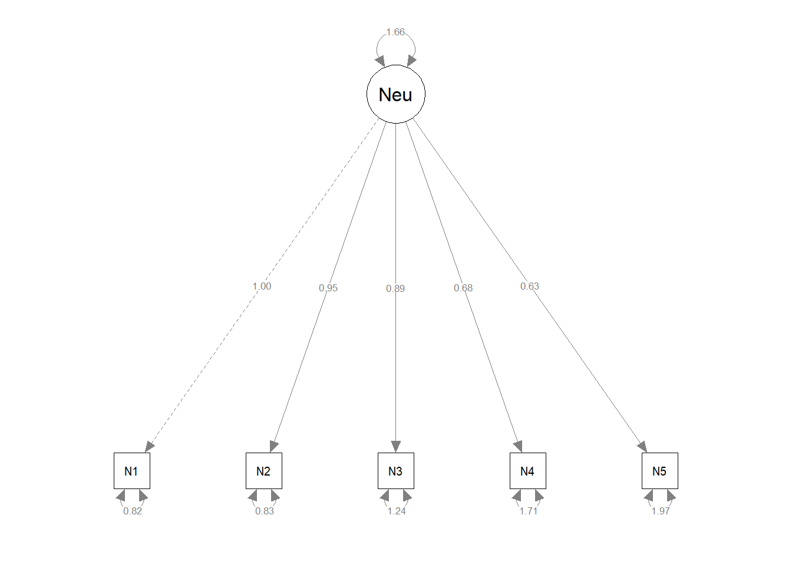
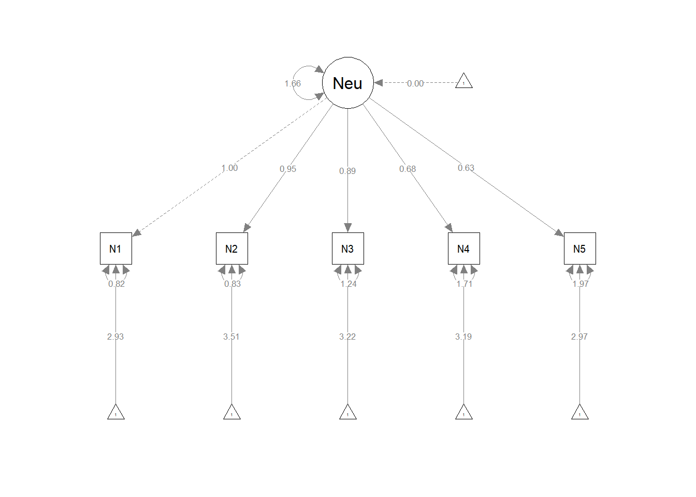
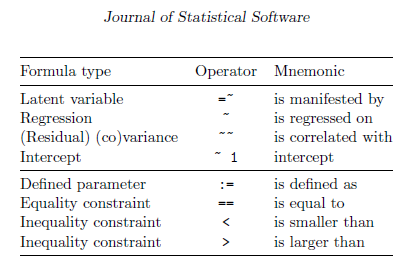

This is lavaan 0.6-12
lavaan is FREE software! Please report any bugs.
library(psych) # for the bfi data
Attaching package: 'psych'
The following object is masked from 'package:lavaan':
cor2cov
library(dplyr) # for data manipulations
Warning: package 'dplyr' was built under R version 4.2.3
Attaching package: 'dplyr'
The following objects are masked from 'package:stats':
filter, lag
The following objects are masked from 'package:base':
intersect, setdiff, setequal, union
library(semPlot)
Exercises
Open RStudio in your practicals project. Create a new script to work with in this second practical related to modelling. Figure out a naming so you would be able to find it back.
Confirmatory Factor Analysis
We will load some data now. Consider replacing the data with some of your own so the exercises become more relevant to you.
We will use example data from the psych package. The bfi dataset. For more details see ?bfi.
Code
data <- psych::bfi
Get some descriptions or summaries of the data.
Code
# For instance usingsummary(data)
A1 A2 A3 A4 A5
Min. :1.000 Min. :1.000 Min. :1.000 Min. :1.0 Min. :1.00
1st Qu.:1.000 1st Qu.:4.000 1st Qu.:4.000 1st Qu.:4.0 1st Qu.:4.00
Median :2.000 Median :5.000 Median :5.000 Median :5.0 Median :5.00
Mean :2.413 Mean :4.802 Mean :4.604 Mean :4.7 Mean :4.56
3rd Qu.:3.000 3rd Qu.:6.000 3rd Qu.:6.000 3rd Qu.:6.0 3rd Qu.:5.00
Max. :6.000 Max. :6.000 Max. :6.000 Max. :6.0 Max. :6.00
NA's :16 NA's :27 NA's :26 NA's :19 NA's :16
C1 C2 C3 C4 C5
Min. :1.000 Min. :1.00 Min. :1.000 Min. :1.000 Min. :1.000
1st Qu.:4.000 1st Qu.:4.00 1st Qu.:4.000 1st Qu.:1.000 1st Qu.:2.000
Median :5.000 Median :5.00 Median :5.000 Median :2.000 Median :3.000
Mean :4.502 Mean :4.37 Mean :4.304 Mean :2.553 Mean :3.297
3rd Qu.:5.000 3rd Qu.:5.00 3rd Qu.:5.000 3rd Qu.:4.000 3rd Qu.:5.000
Max. :6.000 Max. :6.00 Max. :6.000 Max. :6.000 Max. :6.000
NA's :21 NA's :24 NA's :20 NA's :26 NA's :16
E1 E2 E3 E4
Min. :1.000 Min. :1.000 Min. :1.000 Min. :1.000
1st Qu.:2.000 1st Qu.:2.000 1st Qu.:3.000 1st Qu.:4.000
Median :3.000 Median :3.000 Median :4.000 Median :5.000
Mean :2.974 Mean :3.142 Mean :4.001 Mean :4.422
3rd Qu.:4.000 3rd Qu.:4.000 3rd Qu.:5.000 3rd Qu.:6.000
Max. :6.000 Max. :6.000 Max. :6.000 Max. :6.000
NA's :23 NA's :16 NA's :25 NA's :9
E5 N1 N2 N3
Min. :1.000 Min. :1.000 Min. :1.000 Min. :1.000
1st Qu.:4.000 1st Qu.:2.000 1st Qu.:2.000 1st Qu.:2.000
Median :5.000 Median :3.000 Median :4.000 Median :3.000
Mean :4.416 Mean :2.929 Mean :3.508 Mean :3.217
3rd Qu.:5.000 3rd Qu.:4.000 3rd Qu.:5.000 3rd Qu.:4.000
Max. :6.000 Max. :6.000 Max. :6.000 Max. :6.000
NA's :21 NA's :22 NA's :21 NA's :11
N4 N5 O1 O2 O3
Min. :1.000 Min. :1.00 Min. :1.000 Min. :1.000 Min. :1.000
1st Qu.:2.000 1st Qu.:2.00 1st Qu.:4.000 1st Qu.:1.000 1st Qu.:4.000
Median :3.000 Median :3.00 Median :5.000 Median :2.000 Median :5.000
Mean :3.186 Mean :2.97 Mean :4.816 Mean :2.713 Mean :4.438
3rd Qu.:4.000 3rd Qu.:4.00 3rd Qu.:6.000 3rd Qu.:4.000 3rd Qu.:5.000
Max. :6.000 Max. :6.00 Max. :6.000 Max. :6.000 Max. :6.000
NA's :36 NA's :29 NA's :22 NA's :28
O4 O5 gender education age
Min. :1.000 Min. :1.00 Min. :1.000 Min. :1.00 Min. : 3.00
1st Qu.:4.000 1st Qu.:1.00 1st Qu.:1.000 1st Qu.:3.00 1st Qu.:20.00
Median :5.000 Median :2.00 Median :2.000 Median :3.00 Median :26.00
Mean :4.892 Mean :2.49 Mean :1.672 Mean :3.19 Mean :28.78
3rd Qu.:6.000 3rd Qu.:3.00 3rd Qu.:2.000 3rd Qu.:4.00 3rd Qu.:35.00
Max. :6.000 Max. :6.00 Max. :2.000 Max. :5.00 Max. :86.00
NA's :14 NA's :20 NA's :223
Fit a confirmatory factor analysis for the neuroticism factor using the cfa() function from lavaan. See ?cfa for more details. Also create plots with the semPaths() function.
First specify the model.
Code
cfa.model <-'Neu =~ N1 + N2 + N3 + N4 + N5'
Then we will fit the model and look at the results
Code
fit.cfa <-cfa(cfa.model, data = data)summary(fit.cfa)
lavaan 0.6-12 ended normally after 26 iterations
Estimator ML
Optimization method NLMINB
Number of model parameters 10
Used Total
Number of observations 2694 2800
Model Test User Model:
Test statistic 360.932
Degrees of freedom 5
P-value (Chi-square) 0.000
Parameter Estimates:
Standard errors Standard
Information Expected
Information saturated (h1) model Structured
Latent Variables:
Estimate Std.Err z-value P(>|z|)
Neu =~
N1 1.000
N2 0.952 0.023 40.826 0.000
N3 0.892 0.024 36.883 0.000
N4 0.677 0.024 27.818 0.000
N5 0.632 0.025 24.973 0.000
Variances:
Estimate Std.Err z-value P(>|z|)
.N1 0.819 0.036 22.656 0.000
.N2 0.828 0.034 24.025 0.000
.N3 1.245 0.042 29.526 0.000
.N4 1.714 0.051 33.779 0.000
.N5 1.968 0.057 34.494 0.000
Neu 1.655 0.070 23.756 0.000
Code
semPaths(fit.cfa, whatLabels ="est")

Using the cfa() function, you have to specify less in the model compared to the lavaan() function that we used in the lecture. What defaults are being used? Look in ?cfa() at the Details section. There you will find that cfa() is a wrapper function that actually uses lavaan() with specific defaults. Are intercepts for instance estimated or not? Did you see them in the figures?
Rerun the analysis above, now include the meanstructure.
Code
fit.cfa.means <-cfa(cfa.model, data = data, meanstructure =TRUE)summary(fit.cfa.means)
lavaan 0.6-12 ended normally after 26 iterations
Estimator ML
Optimization method NLMINB
Number of model parameters 15
Used Total
Number of observations 2694 2800
Model Test User Model:
Test statistic 360.932
Degrees of freedom 5
P-value (Chi-square) 0.000
Parameter Estimates:
Standard errors Standard
Information Expected
Information saturated (h1) model Structured
Latent Variables:
Estimate Std.Err z-value P(>|z|)
Neu =~
N1 1.000
N2 0.952 0.023 40.826 0.000
N3 0.892 0.024 36.883 0.000
N4 0.677 0.024 27.818 0.000
N5 0.632 0.025 24.973 0.000
Intercepts:
Estimate Std.Err z-value P(>|z|)
.N1 2.931 0.030 96.735 0.000
.N2 3.509 0.029 119.337 0.000
.N3 3.217 0.031 104.346 0.000
.N4 3.190 0.030 105.263 0.000
.N5 2.973 0.031 95.168 0.000
Neu 0.000
Variances:
Estimate Std.Err z-value P(>|z|)
.N1 0.819 0.036 22.656 0.000
.N2 0.828 0.034 24.025 0.000
.N3 1.245 0.042 29.526 0.000
.N4 1.714 0.051 33.779 0.000
.N5 1.968 0.057 34.494 0.000
Neu 1.655 0.070 23.756 0.000
Code
semPaths(fit.cfa.means, whatLabels ="est")

Now investigate the fitmeasures using the fitmeasures() function.
Hm.. The fit is not so great. Perhaps we can look at modification indices. Beware, we are leaving the realm of confirmatory analysis now. We will look at the 5 best modifications.
We could also consider looking at Exploratory Factor Analyses, analyse the structure and collect new data to confirm it. Or perhaps we would like to adjust a questionnaire such that we replace items that seem to fit less well. All sort of things that could be done.
Examples
Since there where some questions about some more advanced SEM methods, I’ll present here a few examples with their sources. They can help you to try and work this out on your own data.
Mediation example
This example come from the lavaan website which is a great resource.
First, some data is simulated that would go with a mediation model.
Code
set.seed(1234)X <-rnorm(100)M <-0.5*X +rnorm(100)Y <-0.7*M +rnorm(100)Data <-data.frame(X = X, Y = Y, M = M)
The rnorm() function let’s you simulate data from a normal distribution. Here 100 samples are taken from a standard normal distribution for X. The mediator is specified by the relationship of 0.5 times X plus unique variation, coming from a standard normal distribution. Y is then specified as 0.7 times the moderator plus unique variation, coming from a standard normal distribution. The data is then put in a dataframe.
Next we need to specify the lavaan model. To be able to read and understand the model this table might help:

Code
model.med <-' # direct effect Y ~ c*X # mediator M ~ a*X Y ~ b*M # indirect effect (a*b) ab := a*b # total effect total := c + (a*b) '
Next we should fit the model. To get more reliable standard errors, we can make use of the option se = "bootstrap".
Code
fit.med <-sem(model.med, data = Data, se ="bootstrap")summary(fit.med)
lavaan 0.6-12 ended normally after 1 iterations
Estimator ML
Optimization method NLMINB
Number of model parameters 5
Number of observations 100
Model Test User Model:
Test statistic 0.000
Degrees of freedom 0
Parameter Estimates:
Standard errors Bootstrap
Number of requested bootstrap draws 1000
Number of successful bootstrap draws 1000
Regressions:
Estimate Std.Err z-value P(>|z|)
Y ~
X (c) 0.036 0.116 0.312 0.755
M ~
X (a) 0.474 0.098 4.837 0.000
Y ~
M (b) 0.788 0.094 8.361 0.000
Variances:
Estimate Std.Err z-value P(>|z|)
.Y 0.898 0.149 6.044 0.000
.M 1.054 0.178 5.917 0.000
Defined Parameters:
Estimate Std.Err z-value P(>|z|)
ab 0.374 0.087 4.314 0.000
total 0.410 0.139 2.942 0.003
We simulate some data where there are 5 timepoints. The mean intercept value is 2, the mean slope value is 0.7. The variance for the intercept is 1 and the variance for the slope is 0.5^2=0.25. The residual variance at each timepoint is 0.5^2=0.25.
Code
# Set seed for reproducibilityset.seed(123)# Simulate data for latent growth curve modeln <-500# sample sizet <-5# number of time pointstime <-1:t # time variableintercept <-rnorm(n, mean =2, sd =1) # intercept latent variableslope <-rnorm(n, mean =0.7, sd =0.5) # slope latent variableobserved_vars <-data.frame()for (i in1:n) {# Simulate observed variables for each participant Y <- intercept[i] + slope[i] * time +rnorm(t, mean =0, sd =0.5) observed_vars <-rbind(observed_vars, Y)}colnames(observed_vars) <-paste0("Y", time)